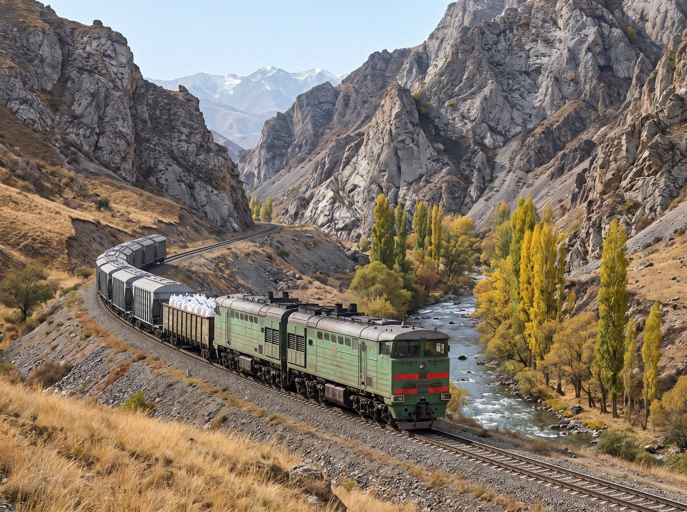

The Combine's products leave Sary-Bulak District by rail and by road, and travel north through Kazakhstan to customers.
Rail
| Section | Details |
|---|---|
| Sary-Bulak spur | About 39 km of the Irad Temir Jolu railway from the turnout west of Talas to the Sary-Bulak works, by way of the foothills and the Urmaral gorge, past Ak-Bulak. Ruling grade about 3%, with short stretches of 4 to 5% |
| Chatkal siding | About 6 km from the Sary-Bulak spur up the Urmaral gorge to the Chatkal Antimony Processing Mill |
| Export route | North through Kazakhstan, entering China at the Dostyk to Alashankou crossing |
Road
Ore from the satellite mines is trucked to the Chatkal mill. Metal and trioxide are also carried by truck by Trans-Chuy Freight & Logistics. The road from Talas to Sary-Bulak runs through the Kara-Suu Canyon; the Chatkal smelter road, about 46 km, runs west along the foothills and up the Urmaral valley.
Packing
Products are packed in steel drums and bulk bags. Antimony metal is shipped as ingots on steel-strapped pallets.